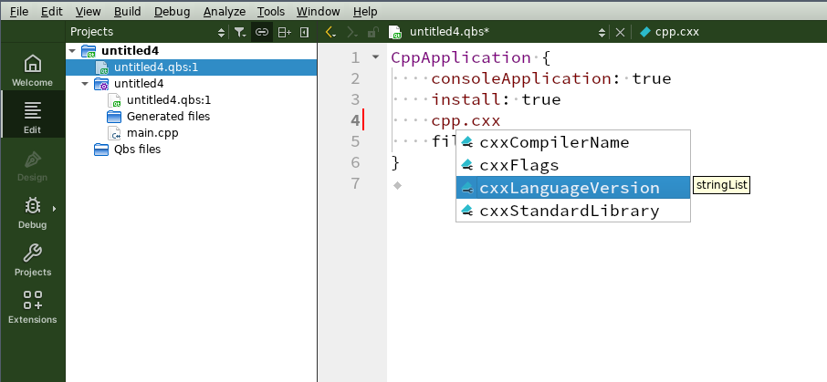

The Qbs build tool version 2.5.0 is available.
Qbs is a community-driven language-agnostic build automation system. It is fast and offers an easy-to-learn language based upon QML.
What’s new
Standout features
Language improvements
A long-standing annoyance when writing qbs project files was that you were often forced to repeat the same condition in different contexts. For instance:
CppApplication {
Depends { name: "ib"; condition: qbs.targetOS.contains("darwin") }
Properties {
condition: qbs.targetOS.contains("darwin")
cpp.defines: "DARWIN_FEATURES"
}
Group {
name: "darwin-specific files"
condition: qbs.targetOS.contains("darwin")
files: [ /* ... */ ]
}
}
From qbs 2.5 on, you can clean up this somewhat messy structure by using the common condition as a central grouping criterion:
CppApplication {
Group {
name: "darwin-specific"
condition: qbs.targetOS.contains("darwin")
Depends { name: "ib" }
product.cpp.defines: "DARWIN_FEATURES"
files: [ /* ... */ ]
}
}
The product above demonstrates two new features of the Group item:
- It can now contain other items, namely
Depends,FileTagger,RuleandScanner, with its condition applying implicitly to these sub-items as well. - It can now act like a
Propertiesitem, conditionally setting module properties for all artifacts in the product.
Speaking of the Properties item, this one got a long-needed major overhaul as well. Most importantly, their conditions can now overlap so several of them can contribute to the same list property:
Properties {
condition: qbs.targetOS.contains("unix")
cpp.includePaths: "myincludes/unix/common"
}
Properties {
condition: qbs.targetOS.contains("linux")
cpp.includePaths: "myincludes/unix/linux"
}
In the above example, building for a Linux target (which is also a Unix) will use both include paths, while e.g. a FreeBSD target will only use the first one. In previous versions of qbs, the second property would have had no effect, because at most one alternative was used.
Note that this means it does not make sense anymore for a top-level (list) property binding to act as an “implicit else case”; instead, it should unconditionally contribute to the property value. For backward compatibility, this particular feature will be introduced gradually. Relying on the old behavior will trigger a warning in qbs 2.6, and the semantics will change afterwards. The new way of specifying a fallback value is to use a Properties item with its condition set to undefined.
For even more language improvements, check the change log.
C++ modules
We are excited to announce that this version of qbs also comes with experimental support for C++ modules. For now, you have to turn it on
explicitly by setting the cpp.forceUseCxxModules property. Detailed instructions can be found here. Do not hesitate to file a
bug report if you encounter any problems.
WebAssembly support
As the third big new feature, we now support the WebAssembly
technology via the emscripten toolchain. To this end, we have introduced
a new toolchain type emscripten and an associated back-end for the cpp module. Qt for WebAssembly is also
supported.
Other noteworthy changes
Also new in this release:
- The freedesktop module now supports localization and deployment of more than one icon.
- The JSON API now supports renaming files.
And here are some more interesting features introduced since our last blog post:
- The conan module provider.
- The flatbuffers module.
- The Exporter.cmake module.
- An LSP server (seen in action in Qt Creator in the screenshot below).

Try it
Qbs is available for download on the download page.
Please report issues in our bug tracker.
Join our Discord server for live discussions.
You can use our mailing list for questions and discussions.
The documentation and wiki are also good places to get started.
Qbs is also available from a number of package repositories (Chocolatey, MacPorts, Homebrew) and is updated on each release by the Qbs development team. It can also be installed through the native package management system on a number of Linux distributions. Please find a complete overview on repology.org.
Qbs 2.5.0 is also included in Qt Creator 15.0.0.
Contribute
If you are a happy user of Qbs, please tell others about it. But maybe you would also like to contribute something. Everything that makes Qbs better is highly appreciated. Contributions may consist of reporting bugs or fixing them right away. But also new features are very welcome. Your patches will be automatically sanity-checked, built and verified on Linux, macOS and Windows by our CI bot. Get started with instructions in the Qbs Wiki.
Thanks to everybody who made the 2.5 release happen:
- Aaron McCarthy
- Christian Kandeler
- Danya Patrushev
- Ivan Komissarov
- Leon Buckel
- Roman Telezhynsky